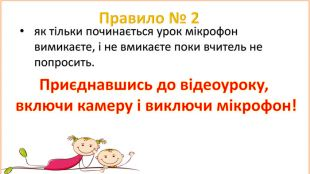
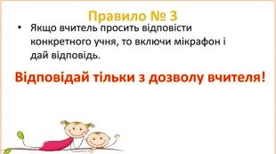
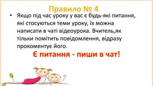
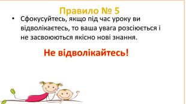
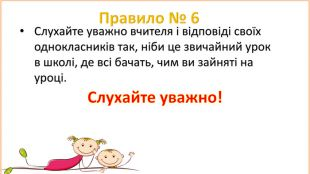
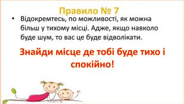
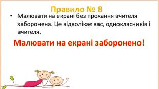
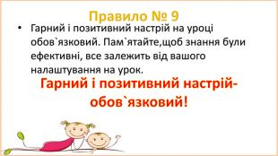

📚 ПРАВИЛА ПОВЕДІНКИ НА УРОЦІ 📚
1. Не запізнюйся на урок! Приєднуйся до уроку за 5-10 хвилин до його початку, за посиланням яке буде виставлено в групі. Будь пунктуальним!
2. Приєднавшись до уроку включи камеру і виключи свій мікрофон.
3. Коли вчитель просить тебе відповісти на запитання – включи мікрофон і дай відповідь, відповідай тільки з дозволу вчителя.
4. Якщо виникають питання під час уроку пиши в чат, вчитель, як помітить одразу відповість
5. Сфокусуйся, займаючись різними справами, твоя увага розсіюється, не відволікайся.
6. Слухай уважно вчителя та однокласників, ніби це звичайний урок.
7. Знайди саме тихе місце в домі, щоб ефективно навчатись
8. Без дозволу вчителя малювати на екрані заборонено. Це відволікає твоїх однокласників та викладача.
9. Твоя налаштованість на урок впливає на результативність, гарний настрій = гарна оцінка!
ВСІМ ПРИЄМНОГО І УСПІШНОГО ДИСТАНЦІЙНОГО НАВЧАННЯ!
⚠ ПРАВИЛА ПОВЕДІНКИ ПІД ЧАС ПОВІТРЯНОЇ ТРИВОГИ ⚠
1. Без паніки! Зроби кілька глибоких вдохів, все буде гаразд!
2. Не лічи ґав. Уважно слухай учителя!
3. Швидко та спокійно візьми необхідні речі! Пам'ятай зайвий багаж може обернутись великим ризиком!
4. Не відволікайся, рухайся в укриття разом з іншими учням дотримуючись вказівок вчителя!
5. Ніколи не мовчи якщо хтось загубився! В разі такої ситуацій негайно повідом учителя.
МИРНОГО НЕБА НАД ГОЛОВОЮ!